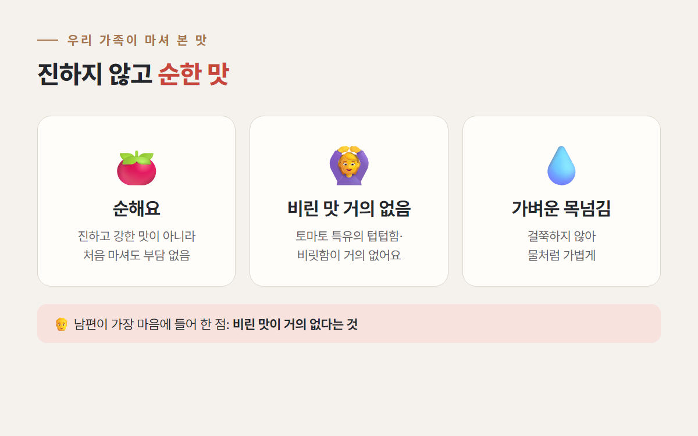
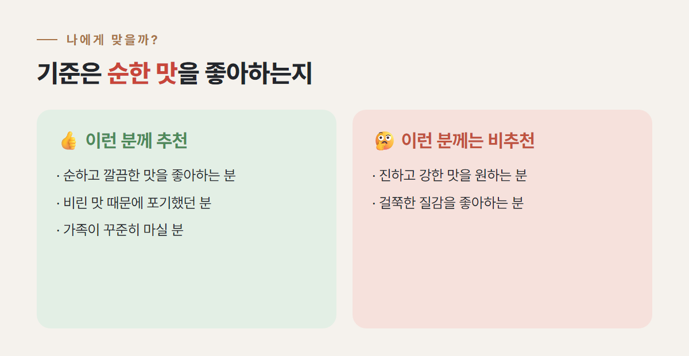

이 포스팅은 쿠팡 파트너스 활동의 일환으로, 이에 따른 일정액의 수수료를 제공받습니다.
📊 스마트 픽스 · 내돈내산 쿠팡 리뷰
"토마토주스 좀 챙겨 먹으면 좋겠다."
남편의 이 한마디로 시작된 보넬드 아이엠 토마토주스 후기예요.
요즘 식습관이 불규칙하다 보니
간편하게라도 챙길 수 있는 걸 찾고 있었거든요.
제 돈 주고 쿠팡에서 사서 가족이 함께 마셔 본 이야기를,
쿠팡에 남겼던 제 리뷰를 바탕으로 정리했어요.
📌 바쁘신 분들을 위한 한눈에 보기
시중에 토마토주스는 정말 많아요.
그런데 첨가물이 들어간 제품은 조금 부담스러워서 망설여졌어요.
그래서 원재료가 최대한 깔끔한 제품 위주로 비교해 봤고,
리뷰도 전반적으로 괜찮은 편이라 이 제품을 골랐어요.
💡 NFC 착즙이 뭐예요?
NFC는 Not From Concentrate의 줄임말로, 농축했다가 물을 다시 타는 '환원' 방식이 아니라 짜낸 즙을 농축하지 않고 담았다는 뜻이에요.
원재료와 함량은 구매 전 상세페이지의 표시 사항으로 한 번 더 확인해 보세요.
1L 병이 4개 오는 구성이라
가족이 같이 마셔도 부담이 없었어요.
한 번에 넉넉히 사 두니 꾸준히 챙겨 먹기 좋다는 점이
생각보다 큰 장점이더라고요.
포장도 깔끔하게 와서 보관하기에도 편했어요.

받고 나서 병 뒷면 라벨을 꼼꼼히 읽어 봤어요.
원재료명에 '토마토 100%' 하나만 적혀 있었어요.
| 원재료명 | 토마토 100% |
|---|---|
| 식품유형 | 과·채주스 |
| 내용량 | 1,000mL (190kcal) |
| 원산지 | 베트남 (수입 제품) |
| 100mL당 영양정보 | 19kcal · 탄수화물 5g · 당류 4g · 나트륨 10mg · 지방 0g · 단백질 0g |


💡 라벨에 적힌 보관·섭취 팁
· 마시기 전에 병을 흔들어 주세요.
· 개봉 후에는 꼭 냉장 보관하고 되도록 빨리 마시래요.
· 과육 같은 가라앉은 침전물이나 시간이 지나며 생기는 색 변화는 착즙주스 특성이라 품질 이상이 아니라고 적혀 있어요.
맛은 전체적으로 굉장히 순한 편이에요.
일반 토마토주스처럼 진하고 강한 맛이 아니라서 처음 마셔도 부담이 없었어요.

특히 토마토 특유의 텁텁하거나 비릿한 느낌이 거의 없어서
거부감 없이 마실 수 있었어요. 남편도 이 부분이 가장 마음에 든다고 했어요.

너무 걸쭉하지 않아 물처럼 가볍게 넘어가는 느낌이에요.
꾸준히 마시기에는 오히려 이런 스타일이 더 낫다고 느꼈어요.
⚠️ 참고해 주세요
이 글은 우리 가족이 마셔 본 맛과 사용감 후기예요. 질환이 있거나 식단 관리 중이라면 드시기 전에 전문가와 상의해 주세요.

| 👍 이런 분께 추천 | 🤔 이런 분께는 비추천 |
|---|---|
| 순하고 깔끔한 맛을 좋아하는 분 | 진하고 강한 토마토 맛을 기대하는 분 |
| 토마토주스의 텁텁함·비릿함이 싫었던 분 | 걸쭉한 질감을 좋아하는 분 |
| 가족이 함께 꾸준히 마실 걸 찾는 분 | — |
특히 꾸준히 마셔야 하는 분들께는
이런 순한 타입이 현실적으로 오래 유지하기 좋은 선택이라고 생각해요.
우리 가족이 마셔 보기엔 굉장히 순한 편이었어요. 일반 토마토주스처럼 진하고 강한 맛을 기대하면 싱겁게 느껴질 수 있어요.
텁텁하거나 비릿한 느낌이 거의 없어서 거부감 없이 마셨어요. 남편이 이 점을 가장 마음에 들어 했어요.
우리 집 아이들은 한 번 맛보더니 생각보다 잘 마셨어요. 자극적인 맛이 아니라 간식 대신 가볍게 한 잔씩 주기 좋았어요. 아이마다 입맛은 다를 수 있어요.
제가 받은 제품 라벨 기준으로 원재료명은 '토마토 100%', 원산지는 베트남이고, 100mL당 19kcal(1병 1,000mL에 190kcal)로 표시돼 있어요. 구매 시점에 따라 바뀔 수 있으니 상세페이지도 함께 확인해 주세요.
토마토소스 대신 살짝 넣어 봤는데 자연스러운 맛이 나서 괜찮았어요.
한 줄로 정리하면, 강한 맛보다 순하고 깔끔한 토마토주스를 찾는 가족에게 잘 맞는 제품이었어요.
이 후기는 제가 쿠팡에 남긴 리뷰를 바탕으로 썼는데, 그 리뷰는 66명에게 도움이 됐다고 표시돼 있어요.
여러분은 토마토주스, 진한 맛과 순한 맛 중 어느 쪽을 좋아하세요? 댓글로 알려 주세요 💬
이 포스팅은 쿠팡 파트너스 활동의 일환으로, 이에 따른 일정액의 수수료를 제공받습니다.
제품은 직접 구매해 사용했으며, 업체로부터 제품이나 원고료를 받지 않았습니다.